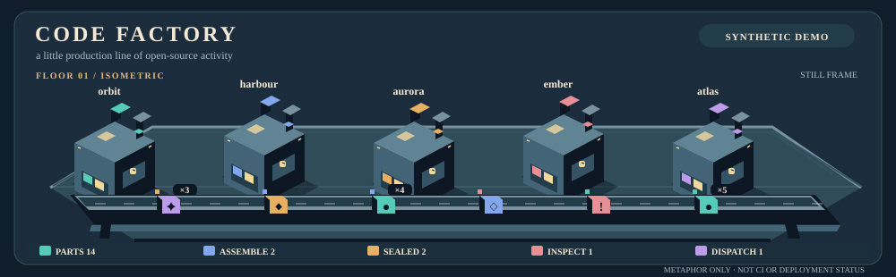

Prototype · Synthetic demonstration
Code Factory
Select a week in the familiar contribution calendar. Its seven day cells directly power the miniature workshop below. An idle day has no working machine. Only repositories and event types recorded during that week appear.
Loading the shared demonstration fixture…

How to read: coloured squares represent recorded event units, not GitHub's official contributions total. The highlighted calendar column is the week displayed below it. Each coloured machine corresponds to an actual event record for that date and repository. A sealed crate represents a merged pull request, not a deployment. This preview does not collect live GitHub activity.
Day-by-day ledger
The ledger explains exactly which input records power the seven workshop lanes.
- Loading demo activity…
Factory vocabulary
Commit: parts
PR opened: assembly
PR merged: sealing
Issue opened: inspection
Release: dispatch
Documentation and export instructions. The full scene exports to a standalone 1200 × 430 SVG for use as a static GitHub README image.